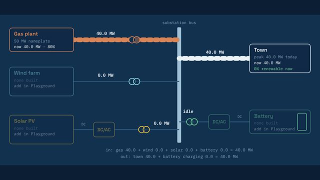
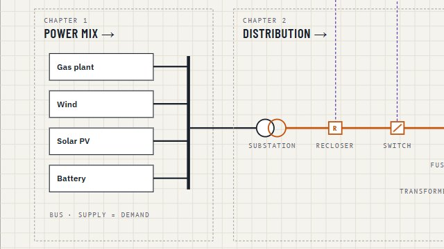
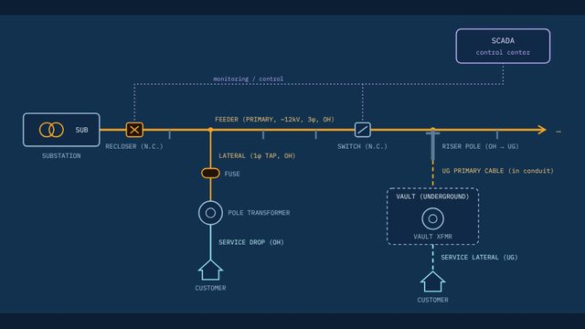
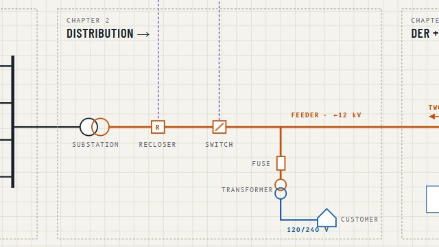
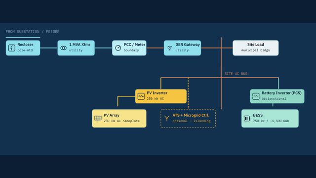
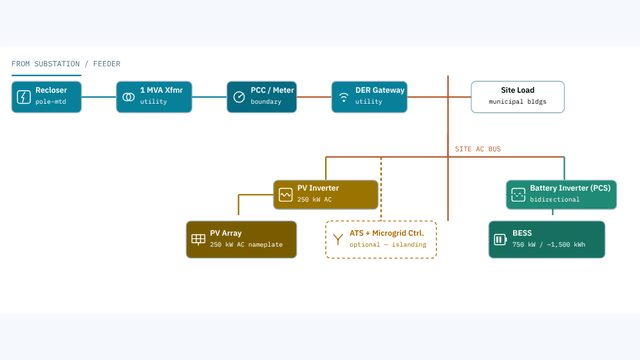
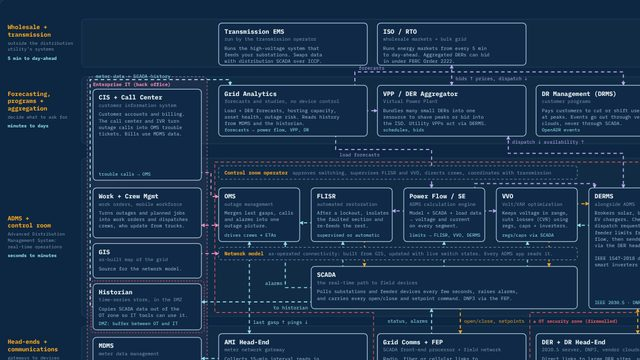
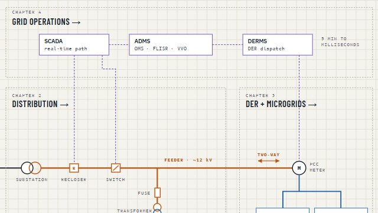

Field guide · 4 chapters · no engineering degree required
Grid Field Guide
Follow electricity from the power plant to the customer's meter, then up into the control room that runs it all. Four interactive chapters for program managers and other non-engineers who work around the grid and need to speak its language.
The whole guide on one line
Follow the power, then the decisions
Chapters 1 to 3 follow the electricity. Chapter 4 steps back to show the systems that watch and steer it.
-


Power mix
Where does the power come from?
A small town runs on one gas plant. Add wind, solar and a battery, then scrub through a 24-hour day to see who supplies each megawatt, why solar gets curtailed at noon, and how a battery's MW rating differs from its MWh.
- Diagram
- Playground
- How the math works
Next: the power reaches a substation. What happens after that?
-


Distribution
How does power get from the substation to the meter?
A clickable one-line diagram of a feeder, overhead and underground. Insert a fault, watch the recloser or fuse respond, then open switches and close a tie to restore as many customers as you can.
- Diagram
- Playground
- Glossary
- Flashcards
- Quiz
- Build the Circuit
- Reliability
- Costs
Next: some customers start sending power back.
-


DER & microgrids
What changes when a customer makes power too?
A worked example: a municipal site with 250 kW of solar and 750 kW of battery storage tied into one feeder. Follow the interconnection from the utility side to the inverters, see who owns what, and what it costs.
- Diagram
- Glossary
- Playground
- Costs
- Quiz
Next: who keeps track of thousands of devices like this one?
-


Grid operations
How do the software systems run all of it?
A layered model from wholesale markets down to field devices: what OMS, FLISR, SCADA, DERMS and MDMS each do, what data moves between them, and how fast. Then step through five situations, from a storm outage to a heat-wave peak.
- Explore the model
- Real-life scenarios
- Concepts quiz
Last chapter. The bar at the top of every chapter brings you back here.
Go in order, or jump in
Each chapter builds on the one before it, but every chapter stands on its own. The bar at the top of each one moves you between them.
Click everything
Every diagram is live. Click a piece of equipment to see what it does, then try it in the Playground.
Simplified on purpose
Voltages, costs and device behavior are typical values for learning. Check with your utility's engineers before using a number for a real decision.